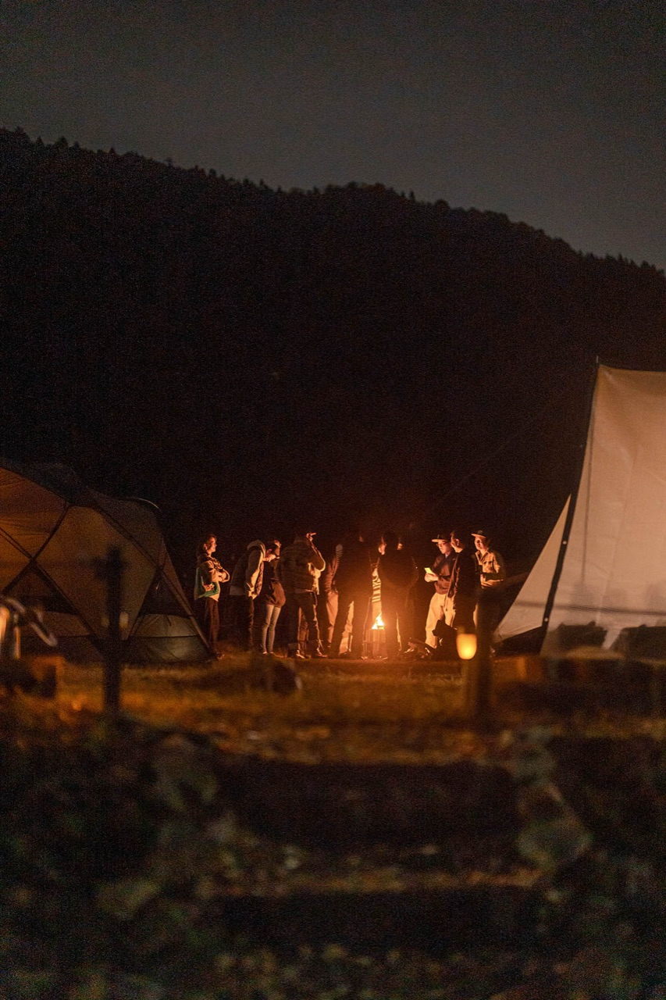

鍋とLẩuの交換会 Giao lưu Nabe – Lẩu Nabe × Lẩu Exchange
Giao lưu Nabe – Lẩu
Nabe × Lẩu Exchange
共通の基本食材（肉・野菜）は全員おなじ。そこへ日本とベトナムの調味料を持ち寄って、チームごとにひと鍋つくります。
味噌とヌクマム、柚子胡椒とレモングラス——組み合わせは自由です。
できあがったら全部を並べて、マイコップを片手にみんなで食べ歩き。順位も勝ち負けもつけません。
Nguyên liệu cơ bản (thịt, rau) giống nhau cho tất cả mọi người. Mỗi đội mang gia vị Nhật và Việt đến để nấu một nồi của riêng mình — miso và nước mắm, yuzu kosho và sả, phối hợp tùy ý. Khi xong, tất cả các nồi được bày ra và mọi người cầm cốc riêng đi nếm thử. Không chấm điểm, không thắng thua.
Everyone starts from the same base ingredients (meat and vegetables). Each team brings Japanese and Vietnamese seasonings and cooks one pot — miso and fish sauce, yuzu kosho and lemongrass, combined however you like. When the pots are ready we line them all up and taste our way around with a cup in hand. No scoring, no winners.
15:00〜16:00